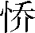

亢德先生：
日前寄奉芜函后，于晚便得《南腔北调集》印本，次日携往书店，拟托代送，而适有人来投大札，因即乞其持归，想已达览。此书殆皆游词琐语，不足存，而竟以出版者，无非为了彼既禁遏，我偏印行，赌气而已，离著作之道远甚。然由此亦可见“本不能文”云云，实有证据，决非虚

恃气之谈也。《论语》顷收到一本，是三十八期，即读一过。倘蒙谅其直言，则我以为内容实非幽默，文多平平，甚者且堕入油滑。闻莎士比亚[152]时，有人失足仆地，或面沾污而不自知，见者便觉大可笑。今已不然，倘有笑者，可笑恐反在此人之笑，时移世迁，情知亦改也。然中国之所谓幽默，往往尚不脱《笑林广记》[153]式，真是无可奈何。小品文前途虑亦未必坦荡，然亦只能姑试之耳。
照相仅有去年所摄者，倘为 先生个人所需，而不用于刊物，当奉呈也。
此复，即颂
时绥。
鲁迅 四月一夜。
注 释
[152] 莎士比亚（W.Shakespeare，1564—1616） 欧洲文艺复兴时期英国戏剧家、诗人，著有剧本《罗密欧与朱丽叶》、《哈姆雷特》、《仲夏夜之梦》等三十七种。
[153] 《笑林广记》 明代冯梦龙编有古笑话集《广笑府》十三卷，至清代被禁止，后来书坊又改编为《笑林广记》，共十二卷，编者署名“游戏主人”。